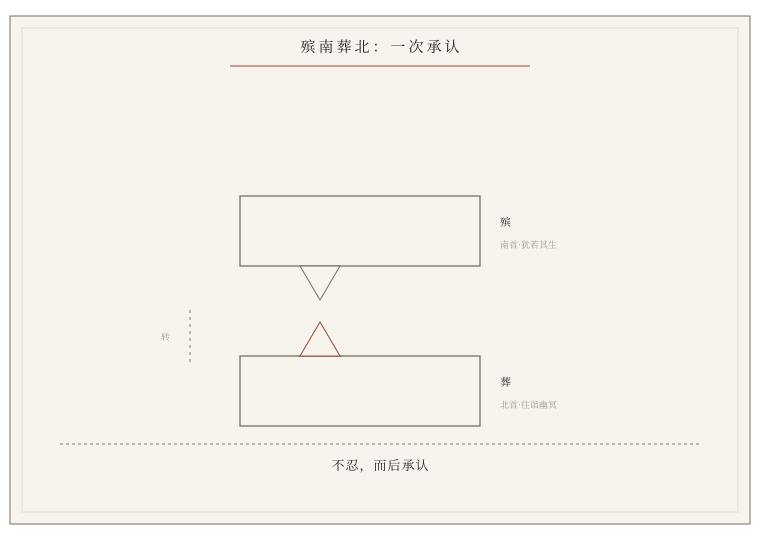

檀弓下 · 四·二十七 · 第 352 课
葬於北方，北首，三代之达礼也，之幽之故也。
说什么事：葬在国北，头朝北，是三代通行的礼，因为要往幽暗处去。
落在哪一层：以「向」量义。论「一具棺的两次转向」。
为何编在此位：上节论吊之时，此节论葬之向。时定人，向定神。
【经】葬於北方，北首，三代之達禮也，之幽之故也。
【注】北方，国北也。
【疏】上「之」训往，下「之」语助。言葬於国北及北首者，鬼神尚幽暗，往诣幽冥故也。／殡时仍南首者，孝子犹若其生，不忍以神待之。
北方 国之北。注「北方，国北也」。
北首 头朝北。首，读如手又反。
达礼 通行的礼。三代共之，故曰达。
之幽 往于幽。「之」训往。
南首 头朝南。殡时之向。
不忍以神待之 不忍把他当作神来待。
葬在国北，头朝北，这是三代通行的礼，因为要往幽暗处去。
此章一句经，一句疏，讲的是同一具棺的两次转向：殡时南首，葬时北首。
而两次转向的理由，恰是一对：殡时「犹若其生」，葬时「往诣幽冥」。
一个人从「还当他活着」，到「承认他归幽」，中间隔着一场葬礼。
第一层 北为幽 古人以北方为幽暗之方。生者南面而治，死者北首而归。
方向在此不是地理，是义理：北是「往」，是「去」；南是「生」，是「向明」。
第二层 殡南首：一个「不忍」 疏一句最动人：「殡时仍南首者，孝子犹若其生，不忍以神待之。」
殡是不葬，是「暂放」。此一刻，人还当他在：头朝南，向着屋里，向着人。此之谓「不忍」。
礼在殡时，许人骗自己一次。
第三层 葬北首：一次承认 到了葬，土要盖上，人才真正承认：他不再是「在这里的一个人」，是「往幽去的一个神」。
故改北首。此一转，是礼替人做的那个最难的承认。
不忍与承认，一前一后，皆在礼中。礼不催人早承认，也不许人永不承认。
第四层 「三代之达礼」四字 夏殷周三代，礼多异，而此一同。何以同？因为「之幽」是人事之共，非一代之私。
礼之「达」者，多是这类触及人之所以为人的事：死、幽、别、归。凡此，三代不能异。
第五层 今日之用：丧仪的两次方向 今之丧仪，头向多由棺位、门向、习俗而定，未必有义。
此节提醒：凡涉方向者，背后多有一义。若有义，则方向即语言；若无义，则方向只是麻烦。
与今日何干 今人办丧，常遇「头朝哪边」之争，亲友各执一说，终以「习惯如此」了之。此节给出的是那个「所以然」：殡南是不忍，葬北是承认。知其所以然，则争可解：先问此是殡还是葬，再问要表达哪一种心。
| 左 | 右 |
|---|---|
| 葬於北方 | 国北 |
| 北首 | 头朝北 |
| 三代之达礼 | 三代所同 |
| 之幽 | 往于幽冥 |
| 殡南首 | 犹若其生 |
| 不忍以神待之 | 殡时之心 |
| 承认 | 葬时之心 |
画一具棺的两次位置，视点俯视。上方一棺横置，棺之一端有一小三角示「首」，三角朝下（南）；下方一棺同形同置，三角朝上（北）。二棺之间画一条极细的横线，线中央断一小口。不画文字、不画人。赭色只用在下方棺上那只三角。
